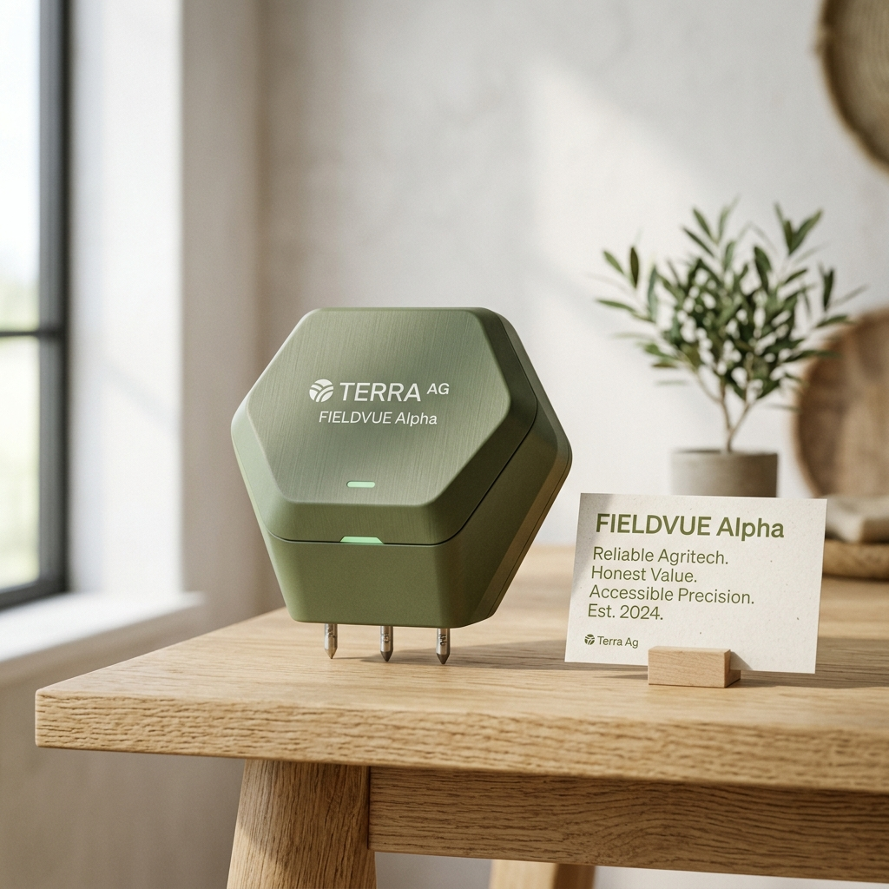

Affordability in agricultural technology is often misunderstood. Many smart irrigation systems claim to save water or increase yield, but their high upfront cost, installation complexity, and recurring dependencies make them inaccessible to the majority of farmers.
Oriva approaches affordability from a fundamentally different angle—not just as a lower price point, but as a complete cost philosophy designed for real-world impact.
The Low Entry Barrier
Most existing smart irrigation systems require a massive investment in infrastructure, including multiple sensors, central controllers, and professional installation. This pushes costs into tens of thousands of rupees, making them viable only for large-scale commercial operations.
Oriva is designed to work with minimal hardware—a compact, powerful sensing unit that doesn't require a mandatory automation overhaul. This drastically reduces the initial investment, making it accessible even for small and medium-sized holdings.
No Hidden Costs, No Subscriptions
A major issue with current agritech is dependency-driven cost. Farmers are often locked into monthly subscription fees for cloud services or premium app features. Oriva eliminates these layers by being:
- Fully functional without subscriptions: All core analytics are available on-device.
- Independent of cloud connectivity: No mandatory data plans to keep the system running.
- Designed for long-term use: Built with rugged components to minimize maintenance contracts.
Energy Efficiency as a Cost Saver
Traditional automated systems often rely on continuous connectivity and high-power components. Oriva’s design minimizes power consumption and data overhead, resulting in longer battery life and reduced operational costs over the season. This makes it an investment that pays for itself through water and energy savings.
Democratizing Smart Farming
While most systems are built for large-scale precision agriculture, Oriva is built for real-world farmers with real constraints. We are democratizing irrigation intelligence, making it practical and scalable across diverse farming conditions without the financial burden of traditional agritech.